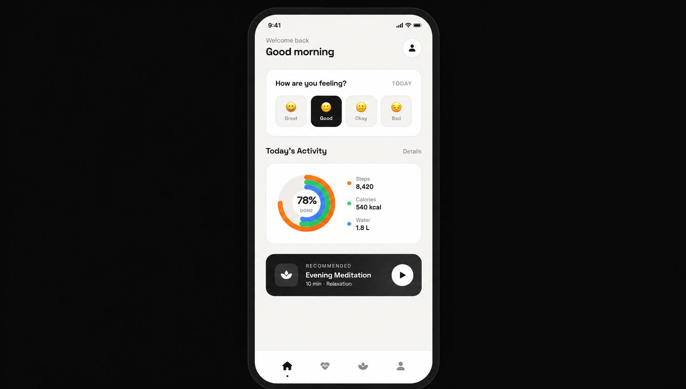

Health & Wellness App
A mindful health companion designed to help users build better habits, track their mood, and find moments of calm in their daily routine.
View live demo
Project Overview
Health & Wellness App is a mobile companion designed to help users build better daily habits, monitor their emotional state, and integrate moments of mindfulness into their busy lives. The goal was to make wellbeing tracking feel calm, personal, and sustainable.
Problem
Most health apps overwhelm users with numbers, charts, and pressure. People who try them often abandon them within the first week because tracking feels like work instead of support.
- Fitness apps feel stressful, not supportive
- Mental wellbeing is rarely tracked — only physical
- Existing apps lack emotional connection
- Users don't see long-term progress
Research & Discovery
I conducted user research to understand why people abandon health apps and what would make them stay. The research combined interviews, diary studies, and competitive analysis.
User Interviews
35+ interviews with users aged 22-40
Diary Studies
2-week tracking of daily habits
Competitive Analysis
12+ health apps analyzed
User Personas
3 personas created
Key Insights
- Users want gentle encouragement, not pressure
- Emotional check-ins are as important as steps
- Simplicity beats feature overload
- Visual calm reduces anxiety about tracking
Design Process
Discovery & Research
Understanding user needs, habits, and frustrations with existing health apps.
Information Architecture
Structured a calm, minimal navigation — 4 main areas only.
Wireframing
Low-fidelity sketches to test flows and reduce complexity.
Visual Design
Warm, calming palette with soft typography and gentle motion.
Prototype & Test
Interactive prototype tested with 15 users, iterated 3 times.
Solution
The final product focuses on calm, everyday wellbeing — combining physical activity, emotional check-ins, and mindfulness in one simple home screen.
Mood Check-In
Simple daily emotional tracking with no pressure
Activity Rings
Visual progress for steps, calories, and water
Guided Meditation
Short, contextual meditation recommendations
Gentle Insights
Weekly summaries that encourage, not judge
Results & Impact
"Finally an app that doesn't make me feel guilty. It actually helps me slow down and check in with myself."— Maria L., User
Lessons Learned
- Calm design is a competitive advantage
- Emotional tracking is as valuable as physical
- Less features → more engagement
- Motion should feel gentle, never demanding